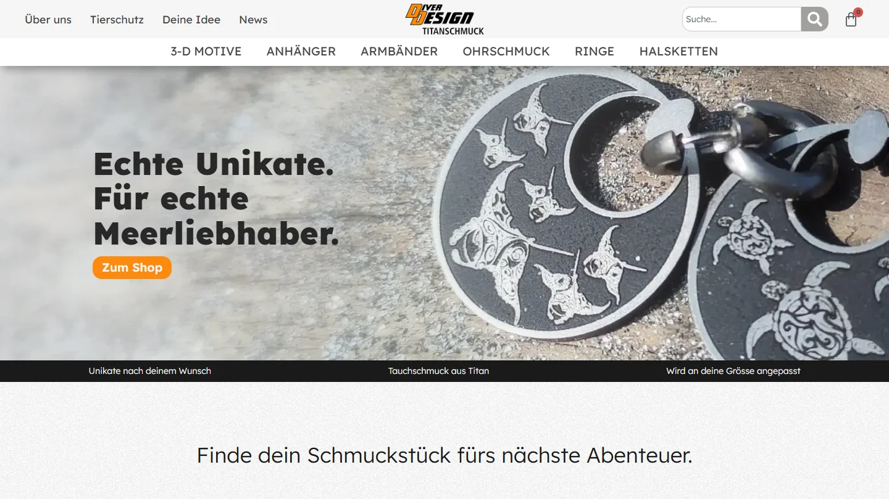
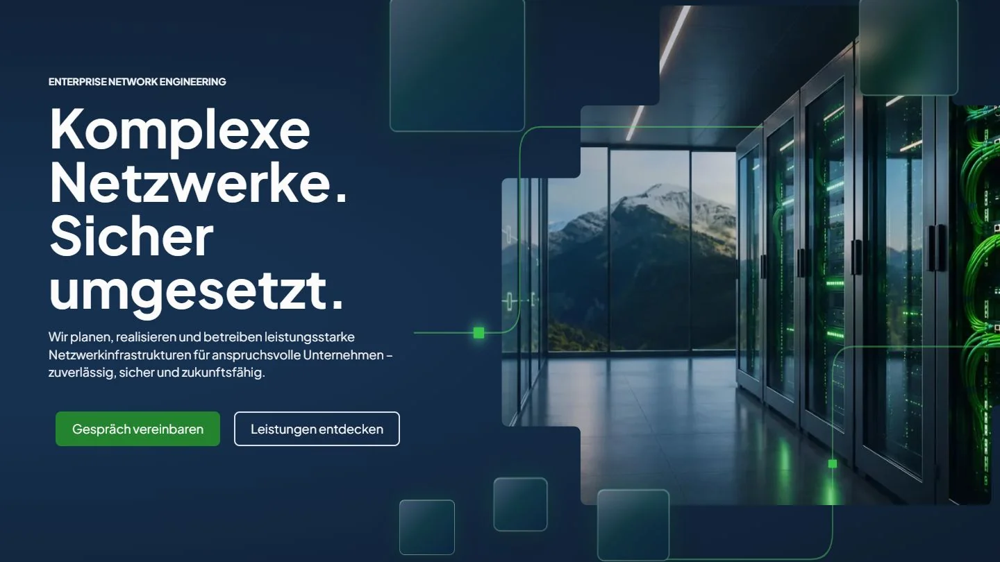
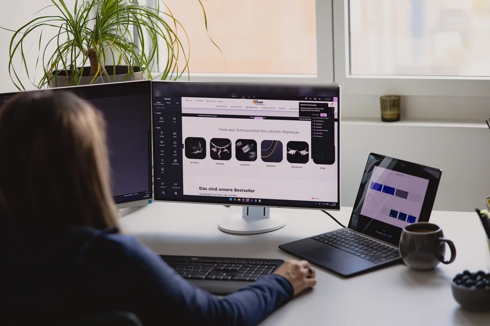

WEBDESIGN WITH PURPOSE.
Du hast etwas richtig Gutes aufgebaut. Zeig es auch den Menschen, die dich noch nicht kennen.
Mit einer individuellen Website, die nicht nur gut aussieht, sondern vermittelt, was dein Unternehmen ausmacht, warum deine Kunden gerne zu dir kommen und weshalb sich ein genauerer Blick lohnt.
Lass uns etwas Schönes daraus machen.A FIRST IMPRESSION.
Deine Kunden wissen, warum sie zu dir kommen. Deine zukünftigen noch nicht.
Vielleicht schätzen sie deine unkomplizierte Art. Deine Präzision. Deine Erfahrung. Oder die Tatsache, dass du dir für Dinge Zeit nimmst, die andere längst übersehen.
All das macht dein Unternehmen aus.
Nur haben Menschen, die dich zum ersten Mal online entdecken, noch keine dieser Erfahrungen gemacht. Sie bilden sich einen Eindruck anhand dessen, was sie sehen, lesen und dabei empfinden.
Und genau hier wird Webdesign richtig interessant.
A LITTLE EXPERIMENT.
Traust du deinen Augen?
Welches der beiden Elemente wirkt heller?
Auflösung anzeigen Auflösung ausblenden
#5C5445 #5C5445
Überraschung. Beide haben exakt dieselbe Farbe.
Was sich unterscheidet, ist lediglich ihre Umgebung. Und die verändert, wie du sie wahrnimmst.
Jetzt stell dir vor, eines dieser Elemente wäre dein Unternehmen.
Deine Erfahrung, deine Leistungen und die Qualität deiner Arbeit bleiben dieselben. Aber die Art, wie wir sie präsentieren, beeinflusst, wie andere sie wahrnehmen.
Deshalb beschäftige ich mich bei der Gestaltung nicht nur mit Farben, Schriften und schönen Bildern, sondern auch damit, was sie beim Menschen auslösen.
Dein Unternehmen bleibt dasselbe. Der Eindruck, den es hinterlässt, kann ein ganz anderer sein.
SELECTED WORK.
Zum Glück sind nicht alle Unternehmen gleich.
Sonst wäre mein Job ziemlich langweilig.
Jedes Unternehmen bringt seine eigene Geschichte, Persönlichkeit und Zielgruppe mit. Und genau das soll sich auch in seiner Website widerspiegeln.
Hier sind ein paar Projekte, bei denen ich diese unterschiedlichen Welten kennenlernen und digital gestalten durfte.

MORE THAN A PRETTY WEBSITE.
Du musst nicht wissen, wie man eine gute Website macht.
Dafür bin ich da.

Was mich interessiert, ist dein Unternehmen. Was du machst, für wen du es machst und wohin du damit möchtest.
Aus unserem Gespräch entwickle ich eine Strategie, ein gestalterisches Konzept und die passenden Inhalte. Vielleicht entsteht daraus eine umfangreiche Website, vielleicht eine einzelne Landingpage oder ein Online-Shop.
Auch um die Technik, die mobile Darstellung und die Grundlagen für deine Sichtbarkeit in Suchmaschinen kümmere ich mich.
Du musst also nicht erst fünf verschiedene Dienstleister organisieren, sämtliche Texte schreiben und dir überlegen, wie viele Unterseiten du brauchst.
Du kennst dein Unternehmen. Ich weiss, wie wir es digital präsentieren können.
Und wenn noch etwas fehlt?
Vielleicht besteht deine bisherige visuelle Identität aus einer einzigen Logodatei, deren Ursprung niemand mehr so genau kennt.
Auch damit können wir arbeiten.
Bei Bedarf bereite ich vorhandene Logos auf und entwickle eine stimmige Basis aus Farben, Schriften und gestalterischen Elementen.
Wenn dein Projekt eine vollständige Markenentwicklung oder professionelle Fotografien benötigt, ist es sinnvoll, entsprechende Spezialisten hinzuzuziehen.
Nicht weil wir alles möglichst aufwendig machen wollen, sondern weil es sich lohnt, die richtigen Menschen an den richtigen Stellen einzusetzen.
FROM IDEA TO ONLINE.
Wie aus einem Gespräch deine Website wird.
-
01
Erstmal kennenlernen.
Erzähl mir von deinem Unternehmen. Was läuft gut? Welche Kunden möchtest du erreichen? Was gefällt dir und was ganz bestimmt nicht?
Du brauchst dafür weder eine Präsentation noch ein fertiges Konzept. Ein gutes Gespräch reicht als Ausgangspunkt.
-
02
Ich mache mir Gedanken.
Jetzt geht es darum, all die Informationen zusammenzubringen. Ich beschäftige mich mit deiner Zielgruppe, entwickle die Besucherführung, erarbeite die Inhalte und finde eine visuelle Richtung, die zu deinem Unternehmen passt.
-
03
Es nimmt Form an.
Aus Gedanken werden Layouts, aus Layouts eine funktionierende Website.
Hier wird gestaltet, entwickelt, ausprobiert und auch mal eine Idee wieder verworfen, weil mir inzwischen eine bessere eingefallen ist.
-
04
Jetzt kommt dein Blick dazu.
Du bekommst deine Website zu sehen. Wir besprechen, was sich bereits richtig anfühlt und wo wir noch etwas verändern möchten.
Schliesslich sollst du dich und dein Unternehmen darin wiedererkennen.
-
05
Ab ins Internet!
Wenn alles sitzt, kümmern wir uns um die letzten technischen Details und deine Website geht online.
Und dann darfst du sie endlich mit Stolz verschicken.
GOOD PEOPLE. GOOD PROJECTS.
Am schönsten ist es, wenn am Ende beide Freude am Ergebnis haben.
Kundenrezensionen
Platzhalter für Kundenrezensionen.
GOOD TO KNOW.
Ein paar Dinge, die du dich vielleicht gerade fragst.
Was kostet mich eine neue Website?
Damit du eine ungefähre Vorstellung hast: Für ein individuelles Webprojekt kannst du mit einem typischen Investitionsrahmen von CHF 6’500 bis 8’500 rechnen. Umfangreichere Projekte, insbesondere Online-Shops, können auch über CHF 10’000 liegen.
Was dein Projekt tatsächlich kostet, ergibt sich aus deinen Anforderungen. Nach unserem Erstgespräch erhältst du ein individuelles Angebot.
Kann ich in Raten bezahlen?
Ja! Gegen einen kleinen Aufpreis kannst du die Investition auf zwei oder drei Raten verteilen.
Die erste Rate ist bis zum vereinbarten Projektstart fällig. Die weiteren Zahlungstermine legen wir gemeinsam fest.
Wann können wir loslegen?
Auch wenn es mich bei spannenden Projekten manchmal in den Fingern juckt, direkt anzufangen – mein Kalender hat seine Grenzen.
Deshalb vereinbaren wir einen Projektstart, ab dem ich mir bewusst Zeit für dein Unternehmen nehme.
Wie lange dauert es, bis meine Website fertig ist?
Die Frage aller Fragen.
Jedes Unternehmen ist anders und damit auch jedes Webprojekt. Der Umfang, die vorhandenen Inhalte, unsere Abstimmungen und manchmal auch eine richtig gute Idee, die erst während des Projekts entsteht, beeinflussen die Dauer.
Einen realistischen Zeitrahmen besprechen wir deshalb individuell.
Muss ich die Texte selbst schreiben?
Nein. Die Inhalte entstehen auf Grundlage unseres Erstgesprächs und der erarbeiteten Strategie.
Wenn du bereits Texte hast, bestimmte Aussagen unbedingt auf deiner Website haben möchtest oder mit deinen bisherigen Inhalten zufrieden bist, berücksichtigen wir das selbstverständlich.
Was ist mit Bildern?
Vorhandenes Bildmaterial können wir gerne verwenden, sofern es qualitativ und gestalterisch zum Projekt passt.
Wenn neue professionelle Fotografien sinnvoll sind, empfehle ich dir, einen erfahrenen Fotografen hinzuzuziehen. Gute Bilder können für einen Webauftritt einen enormen Unterschied machen.
Wird meine Website bei Google gefunden?
Ich kümmere mich um die wesentlichen technischen und inhaltlichen Grundlagen, damit deine Website von Suchmaschinen gefunden und verstanden werden kann.
Eine bestimmte Platzierung bei Google kann ich dir nicht versprechen.
Wenn du darüber hinaus gezielt in deine Sichtbarkeit investieren möchtest, etwa durch weiterführende SEO-Massnahmen, Google Ads oder detailliertes Tracking, empfiehlt sich die Zusammenarbeit mit entsprechenden Spezialisten.
Was passiert nach der Veröffentlichung?
Auch wenn deine Website fertig ist, hört meine Arbeit nicht unbedingt auf.
Ich empfehle dir ausdrücklich meine laufende Website-Betreuung. Für einen überschaubaren Betrag kümmere ich mich um regelmässige Updates, Datensicherungen und die technische Pflege deiner Website.
Und wenn sich eine Öffnungszeit ändert, ein neues Teammitglied dazukommt oder du einen kleinen Änderungswunsch hast, schreibst du mir einfach eine E-Mail.
Du musst dich also auch nach der Veröffentlichung nicht plötzlich selbst um alles kümmern.
Kann ich meine Website auch selbst bearbeiten?
Natürlich! Es ist schliesslich deine Website.
Wenn du Inhalte selbst bearbeiten möchtest, erhältst du die entsprechenden Zugangsdaten. So kannst du beispielsweise Texte anpassen, Bilder austauschen oder Informationen aktualisieren.
Die meisten meiner Kunden schicken mir ihre Änderungswünsche trotzdem lieber per E-Mail. Aber wie du das handhaben möchtest, entscheidest du selbst.
LET'S CREATE SOMETHING.
Ich weiss noch nicht, wie deine neue Website aussehen wird.
Und genau das macht es so spannend.
Vielleicht hast du schon unzählige Ideen gesammelt. Vielleicht möchtest du dich einfach überraschen lassen. Oder du hast bisher nur das Gefühl, dass da noch einiges mehr drin liegt.
Was auch immer dein Ausgangspunkt ist – ich bin neugierig, was wir daraus machen können.
Erzähl mir von deinem Projekt.